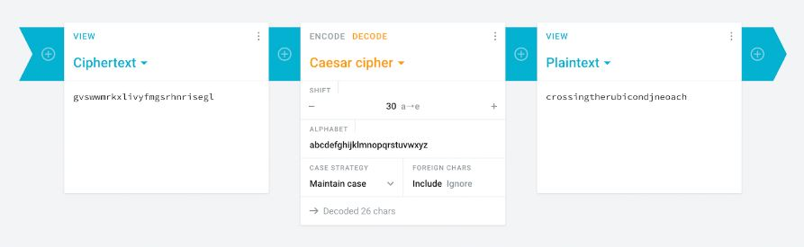
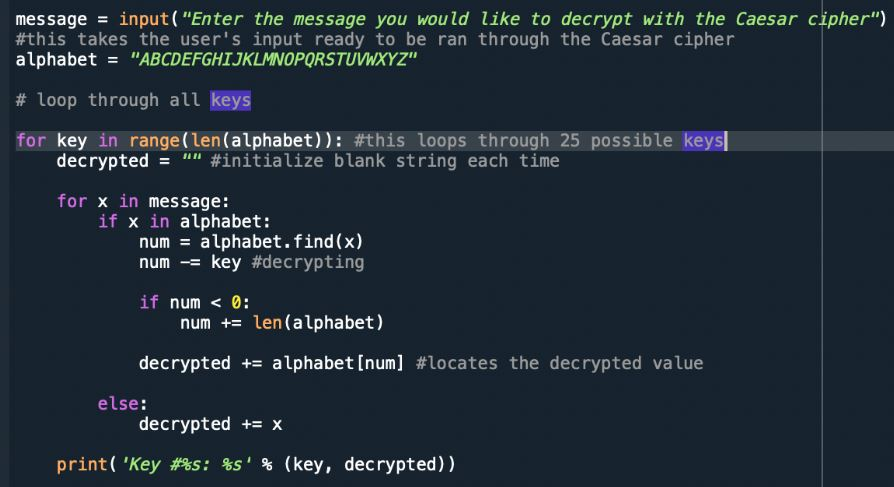

picoCTF challenge
Description: Decrypt this message (picoCTF{gvswwmrkxlivyfmgsrhnrisegl})
Solve:
Step 1. The solution to this problem is pretty straightforward. Given that the question is named ‘caesar’ and knowledge of there being a cipher named the same, we can deduce that we should run the code through a Caesar cipher.
Step 2. The Caesar cipher (also known as a shift cipher) is a type of substitution cipher and works by shifting the letters of the alphabet along by a given number of characters, this parameter being the key. We can either attempt to substitute through ‘brute-forcing’, where we test every shifted key in the alphabet, or simply rely on modern technology and copy and paste picoCTF{gvswwmrkxlivyfmgsrhnrisegl} into a website containing the Caesar cipher.
Step 3. In the demonstration below we used Cryptii , but other websites such as dCode and Practical Cryptography contain the cipher tool amongst many other valuable cryptography resources too.
The final deciphered text (picoCTF flag) we obtain is picoCTF{crossingtherubiconjneoach}, which is the correct answer.

Fun trivia: The phrase "crossing the Rubicon" is an idiom that means that one is passing a point of no return. Its meaning comes from allusion to the crossing of the Rubicon by Julius Caesar in early January 49 BC.
It is worth mentioning that a Caesar cipher can be coded out in a few simple steps. Today, we will demonstrate this through Python. This snippet of code allows for the user to check all possible outputs of the Caesar cipher, and small explanations are offered below in grey.

There are only 25 possible keys, 26 create the same output as the input and will be identical to a shift of 0. Any shift above 26 will create an identical output as one of the shifts between 1-25.
The Caesar cipher only encrypts letters so the letter spacing pattern will be identical to the plaintext. You can therefore select an encrypted block of text and know it has a meaning. With brute force you could discover the exact shift (ie one shift will make a recognisable word).
The key is constant throughout the text, the entire cipher text can be cracked with the same key once one word is deciphered.
With sufficient cipher text the frequency of every letter used can be counted and analysed. The most frequently occurring character is likely to be the 'e', you can then calculate the shift.
Extension knowledge about the Caesar cipher:
AQA A’Level Encryption - Caesar cipher
Encryption and the Caesar Cipher
Explanation and demonstration by Serene Zhai